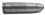

18. BÖLÜM
İskender Topal bizimle değilmiş, sorumu duymamış gibi sigarasını içiyordu önüne doğru eğilmiş. Ayla Duman’ın yaktığı ilk erkek değilsin dedim içimden. Savur efkârını.
Firdevs Işın dayanamadı, atıldı.
“Buna benzer başka yeri var mı buranın sahibinin?” dedi. “Neriman Teyze’yi götürebileceği...”
İskender Topal sen de nereden çıktın der gibi baktı kafasını kaldırıp. Daldığı hülyaları boş verip cevap vermeye değer mi diye düşünüyordu galiba.
“Anlaşmamızı unutma Kayserili...” dedim.
“Ben öyle bir yer duymadım.”
Sigarasından bir nefes daha çekti. Kalan miktarın uzunluğuna baktı. Külünü silkti kolçağın üstündeki kül tablasına.
Başka ne sorabilirim diye düşünüyordum.
“Biz gidince ne yapacaksın?” dedim.
Sorum İskender Topal’ı gerçek dünyaya çekti galiba. Bana baktı. Gözlerindeki bulut kayboldu, dudakları gerildi. Sigarasının son santimini de bitirdi. Parmağı ateşe dokunmuş gibi sıçradı. Sigara yere düştü elinden. İşaretparmağını ağzına aldı. Öteki eliyle dikkatle aldı sigarayı yerden. Kül tablasına bıraktı. Söndürmek için bastırmadan.
“Ananı, avradını...” dedi ağzının içinden. Duymazlığa geldim.
“Beni dinle,” dedim. “Sözüm söz. Ortalıktan kaybolabilirsin rahatlıkla. Ayakçı Burhan abinden korkmana gerek yok. Bu iş sona erince, onun da çanına ot tıkanmış olacak büyük bir ihtimalle. Var mı kafayı gömeceğin bir yer birkaç zaman? Uzakta olsa iyi olur.”
“Silivri’de bir teyzem var,” dedi. “Bir uğrasan diyordu ne zamandır. Kızına askıntı olan bir herif mi ne varmış.”
“Tamam,” dedim. “Atla git Silivri’ye. Adamı da çok hırpalama.”
Kendine güvenini yeniden kazanmış ergen bir oğlan gibi gülümsedi İskender Topal. Doğruldu. Gözlerinde küçük bir ışık gördüm.
“Essahtan mı?” dedi çoktandır İstanbul ağzıyla konuşma gayretini bitmiş sigarasıyla birlikte kül tablasına atmış gibi. “Burası n’olacak?”
“Takma kafana,” dedim.
Ayağa kalktı. Onunla birlikte çaprazımızdaki koltukta oturan taksici de fırladı. Bana baktı onay için. Kafamı salladım.
İskender Topal kapıya doğru iki adım attı. Sonra aniden döndü. Bana doğru ilerledi. Eğilip elimi öpmeye niyetlendi.
“Git işine oğlum Kayserili...” dedim oturduğum yerden elimi çekmeye çalışırken. İçimden gülüyordum.
“Otoparktaki şaka için de bağışla abi,” dedi elimle mücadele ederken.
“Tamam, tamam,” dedim. “Hadi çek git. Uzatma.”
Elimi bıraktı. Geri döndü. Başı yere eğik yürümesini arkasından seyrettik. Kapıyı ardına bakmadan açtı, çıktı gitti. Kapı kendi kendine kapandı sanki arkasından.
“Ne olacak şimdi?” dedi Firdevs Işın. Mahir Salman da aynı soruyu soracakmış gibi bakıyordu.
“Burayı kapatacağız,” dedim.
Firdevs Işın güçlü bir rakibin ortadan kalkıyor oluşuna sevinmiş gibi gülümsedi. Mahir Salman’a seslendim.
“Şu yukardaki kadını bir çağırır mısın?” dedim.
Sağ tarafımda oturan taksici fırladı onun yerine. Merdivenlere saldırdı. Mahir Salman memnun güldü. İlkokul sınıf öğretmeni hali yerini mahallenin ağır abisi pozlarına bırakmıştı sanki.
Sabolu kadınla taksici aşağıya inene kadar kimse konuşmadı. İkisi merdivenlerden oturduğum kanepeye gelene kadar gözlerimiz üzerlerindeydi. Kadının daha çok. Yüzündeki endişeyi apaçık görebiliyorduk. Önümde ellerini bağlamış durdu. Taksici Mahir Salman’ın yanında omzunu duvara yasladı.
“Biz gidiyoruz,” dedim ayağa kalkarak. “Sana da aynı şeyi yapmanı söyleyecektim.”
Tereddüt içinde iki yanına baktı sabolu kadın.
“İki kere düşünme,” dedim. “Burası kapandı. Peşinden kimse gelmeyecek. Git kendine doğru dürüst bir iş bul.”
“Yukardakiler ne olacak?” dedi.
“Ölene Allah rahmet eylesin,” dedim. “Yaşayanlar başlarının çaresine bakarlar.”
Çakma kliniğin, çakma olup olmadığını bilmediğim hemşiresi ikna olmuşa benzemiyordu. Belki görev aşkından, belki para... Gece ilerliyordu, yorulmaya başlamıştım.
Kapıya doğru bir adım attım. Döndüm sonra. Gerçek bir Sağlık Bakanlığı görevlisi suratsızlığıyla konuştum.
“Sen bilirsin,” dedim. “Burada yapılan şey ciddi bir suç. Birazdan polisler akın edecek. Adının bir yerde kayıtlı olduğunu sanmıyorum. Aklın varsa çekip gidersin, kendine doğru dürüst bir iş bulursun. Bırak yukarıdaki Çorumlu cevaplasın soruları.”
Sabolu kadın bir kez daha düşündü galiba. Konuşmadan döndü. Merdivenlere doğru yürüdü. Onunla daha fazla ilgilenmemeye karar verdim.
“Biz de gidiyoruz,” dedim ortaya.
“Neriman Teyze ne olacak?” dedi Firdevs Işın.
“Ona bu gece iyi bakıldığından eminim,” dedim kapıya doğru yürümeye başlarken.
Firdevs Işın peşimden geldi.
“Ya Begüm?”
“Ona da iyi bakılıyor,” dedim.
Benden hızlı yürüyüp önüme geçti Firdevs Işın. Kapının bir adım önündeydik. Kapı koluna uzanan elimi tuttu.
“Ya ben ne olacağım?” dedi.
Başka çarem yoktu.
“Sana da iyi bakılacak,” dedim.
Taksici tayfası peşimden hareketlenmişti. Ben kapıyı açarken Mahir Salman sordu.
“Bitti mi bu gecenin mesaisi?” dedi.
“Evet,” dedim çakma klinikten dışarı ilk adımımı atarken.
“Bir başka yeri de bassaydık,” dedi dönüp Hakan’la Murat’a bakarken. O ikisi gülüştüler.
Fiat Doblo’yu park ettiğimiz yöne doğru yürüdük. Flaşörleri yanıp sönüyor, yanına bıraktığımız kamuflaj brandalı araç heybetini bir gösterip bir kayboluyordu.
Taksinin içine girdik. Aynı düzende. Motor çalıştı.
“Şimdi nereye?” dedi Mahir Salman.
“Taksim,” dedim.
Fiat Doblo hareketlendi. Biraz ilerden geri döndük. Bestekâr Şevki Bey Sokağı’nın 182 numaralı binasının önünden geçerken hepimiz o tarafa baktık. Salonun ışığı hâlâ yanıyordu. Kapının önünde elinde kocaman bir çanta, bir kadın silueti vardı.
Sürücümüz vites değiştirip Doblo’yu hızlandırırken konuştu.
“Bu saatte nah bulur taksi!”
Kimse gülmedi. Ben saatime baktım.
Taksim Meydanı’na gelinceye kadar kimse konuşmadı. Benim kadar olmasa da, yorulmuşlardı galiba onlar da.

Taksim’de indik. Firdevs Işın geceleyeceği mahalleyi beğenmemiş gibi bakıyordu etrafına. Fiat Doblo’nun ön yolcu koltuğuna eğilip, cüzdanımdan çıkardığım üç en yüksek Türk lirası banknotunu Mahir Salman’ın pencereden dışarı uzanmış avucuna sıkıştırdım.
“Teşekkür ederim beyler,” dedim aracın içine doğru. Karışık mırıldanmalarla cevap verdiler. Durağa dönüp nöbette kim varsa anlatmak için acele ediyorlardı.
“Her zaman!” dedi Mahir Salman.
“Şuradaki umumi telefonlardan 155’i arayın,” dedim. “Adresi verin, bir ceset var üst katta deyin. Fazla konuşmadan.”
“Tamamdır,” dedi maceranın biraz daha devam edeceğine sevinmiş gibi.
“Ararım sizi ben,” dedim penceresinden çekilirken.
Firdevs Işın yanımda, otel yönüne doğru yürüdük. İstiklal Caddesi’nden ama. Kıza Cadde-i Kebir’in paralel sokaklarında bu saatlerde olan biteni göstermeye niyetim yoktu. Adını söylemeye içimin elvermediği otelim yeteri kadar moral bozucu olacaktı.
Gece maceralarını aramaya çıkmış insanların arasından yürüdük. Her taraf ışık, kısa etekli kızlar ve yanlarında kısa etekli kız yoksa, o kızlara bakan oğlanlarla doluydu. Sarhoşlar daha dökülmemişti ortalığa.
İmam Adnan Sokağı’ndan aşağıya kıvrıldık. Kaktüs Kahvesi boş gibiydi. Sokağa masa atma yasağına fazla dayanamazlar dedim içimden. Ben de başka bir yer bulurdum sabah kahvelerimi içmek için. Belli olmaz, kendi evimde içerdim. Umut bu ya, iki neskafe birden yapmam gerekirdi belki. Olabilirdi.
Otelime ulaşan sokakta ilerledik. Firdevs Işın gözleri daha çok yerde yürüyordu tam yanımda. Aklıma söyleyecek önemli ya da anlamlı bir şey gelmedi. Yorgunluğumu hissediyordum her adımda. İyi bir uyumalıydım. Yarın çok işim olacaktı. Galiba.
Otelin camı kırık demir kapısına yirmi metre kala gördüm civciv sarısı saçlı kadını. Yeterince polis ve belediye baskınına uğradığı için kapanan kafenin, fevkalade bir graffiti çalışılmış kepenginin önünde duruyordu. Munch’un Çığlık tablosu. Gündüz giydiklerini değiştirmemişti. Arkasındaki köprü manzarasının mavisi, pembe taytını daha görünür kılıyordu. Çantasını süsleyen boncuklar sokağın ışıklarında parlıyordu ufaktan. Sigara içiyordu.
Göz göze geldik tam hizasında. Hatırladı elbette.
“Vay amca,” dedi aynı anda sakız çiğniyormuş gibi dalgalı bir sesle.
Yaşı on yedinin üzerinde olanlar bana amca diye seslendiklerinde tedirgin olurum.
Gözlerimi kaçırdım.
Cesaretlendi.
“Bakıyorum mal yeni,” dedi. “Ağlamaya başlarsa bir ıslık çal, buradayım.”
Cevap vermedim. Remzi Ünal’ın da çaresiz olduğu anlar vardır. Firdevs Işın’ın omzuna koydum elimi, biraz hızlı yürümesi için cesaretlendirdim. Hafif gergindi galiba elimin altında.
Camı kırık demir kapıdan içeri girdik. Firdevs Işın’ın adımları yavaşladı. Onu arkamda bırakıp resepsiyon tezgâhına ilerledim.
Emre Yeğenoğlu bana değil, Firdevs Işın’a bakıyordu. Yüzüne edepsizce bir sırtarma yayılmıştı. Gözlerimi görünce toparlandı.
“Arkadaşa bir oda lazım,” dedim. “Gürültüsüz olsun.”
Firdevs Işın’a bu kez Hilton’un check-in görevlisi bakışlarıyla baktı. Hayran olunacak ani bir değişimle.
“Hoş geldiniz hanımefendi,” dedi.
Firdevs Işın cevap vermedi. Arkamda olduğu için gülümseyip gülümsemediğini görmedim.
“Hanımefendiye en üst kattan bir oda vereceğim,” dedi Emre Yeğenoğlu önündeki kocaman kayıt defterini gözden geçiriyormuş gibi yaparak. “Hem üst katta, hem arkaya bakar. Sessizdir.”
“Temiz mi yeterince?” dedim.
“Hemen yollarım kat görevlisini, eksik varsa...”
Firdevs Işın lafa karıştı.
“Gerekmez,” dedi. “Hemen yatacağım. Çok yorgunum.”
“Hanımefendi, merak etmeyin, rahat edeceksiniz,” dedi. Arkasındaki anahtar tablosunun üst taraflarından bir anahtar aldı. Tezgâhın üzerine koydu.
Anahtarı alırken sordum.
“Arayan var mı?”
Emre Yeğenoğlu gözlerini tezgâhın altında, göremediğim bölgelerde gezdirdi. Alnını kırıştırdı hatırlamak istiyor gibi.
“Maalesef yok Remzi Bey,” dedi.
Ona cevap vermeden döndüm. Başımla Firdevs Işın’a gideceğimiz yönü gösterdim. Yanımda bu kez tereddütsüz adımlarla yürüdü.
Odasına kadar çıktım onunla. Merdivenlerde konuşmadık hiç. Allahtan tuhaf bir müşteriyle de karşılaşmadık. Kapıların ardından tuhaf sesler gelmedi.
Odasının önünde anahtarını teslim ettim.
“İyi geceler,” dedim. “Ben 12 numarada kalıyorum. Canını sıkan bir şey olursa ara. Kaç olursa olsun.”
“Teşekkür ederim,” dedi.
“Sabah kalkınca hemen haber ver,” dedim.
“Veririm,” dedi.
“İyi geceler,” dedim, döndüm. Koridorda yürürken kapının açıldığını duydum. Merdivene kadar bir çığlık gelmezse ardımdan, durum iyi sayılır dedim içimden. Kapandığını duydum yalnızca.
Kendi katıma kadar yarın neler olacağını düşünmekle zaman geçirdim. Dayan Remzi Ünal dedim içimden. Sonu yaklaşıyor galiba. Otel odalarının, tek başınalığın, insanların hayatını değiştirme zorunluluklarının, kol ameliyatlarının, gırtlak masajlarının sonu yaklaşıyor.
Şimdilik...
Odama girdiğimde Sultan Karakum’un cep telefonunu şarja bağladım unutmadan. Ayakçı Burhan’ın telefonunu elime aldım, tarttım şöyle bir. Bana söyleyeceklerini söylemişti. İki cep telefonu fazla geldi birden. Çöp kutusuna doğru bir hook atışla gönderdim cihazı. Teneke kutu tıngırdadı. Odamı temizleyen kimse güle güle kullansındı. Sonra kendimi sırtüstü bıraktım yatağın üzerine.
Yorulmuştum gerçekten.
Sabah bu yataktan kalktığımda başka bir adamdım. Kendime ve dünyaya küsmüş, hayatla aramdaki en güçlü bağın, Adana kebap, ezme ve rakıya dönüştüğü bir adamdım. Üstüne sigara ve kahve. O kadar.
Nişanlısını arayan bir adama denk gelmiştim. Adam bana denk gelmişti aslında. Zayıf tarafımdan vurmuştu. En zayıf tarafımdan. Tamam demiştim, tamam. Kendime hayrım dokunmuyorsa, gariban bir doktora hayrım dokunsun bari. Uzun boylu, sarı saçlı, gözlüklü bir doktora. Mavi gözlü. Sabahları nerede kahve içtiğimi bilecek kadar kurcalamıştı beni. Ona İstanbul’un en iyi özel dedektifi olduğumu söyleyenler kadar, en salak özel dedektifi olduğumu söyleyenler de vardı. Onlarla da konuşmuştu anlaşılan.
Sonra iş boka sarmıştı. Her zaman olduğu gibi.
Ortalığa dökülüp bir iki soru sorduğumda birileri telaşlanmıştı. Her birinin kendilerine göre anlaşılır, makul nedenleri vardı telaşlananların.
Yerimden olağanüstü bir üşengeçlikle kımıldayıp bir sigara sağladım kendime. Açık pencereden dışarı süzülmesi hoşuma gidiyordu dumanların. Dışarıdan karşılık olarak gelen kimini anladığım, kimini anlamadığım sesler hoşuma gidiyordu.
Birisini öldürmek anlaşılırdı belki, makul değildi ama.
Birisi fazla telaşlanmıştı.
Gerektiğinden çok daha fazla.
Silah dediğin, hele ufak tefek bir tabancaysa, sıradan bir aletti. Çekiç gibi, tornavida gibi. Çekiçle çiviyi, tornavidayla vidayı korkutamazdın ama tabanca kimi zaman yalnızca korkutmak için kullanılabilirdi. Bazen de patlardı. Sen istemeden patlardı sanki.
Patlayınca küçük bir yatak odasındaysan, sana doğru gelen mermiden kurtulmak imkânsız olurdu çoğunlukla. Başıma gelmişti, biliyordum. Yatak odasında değil, salonda patlamıştı. Kurşun dediğin hem gürültülü hem çok hızlıydı. Hayatının gözünün önünden film şeridi gibi geçmesine bile zamanın olmazdı. Kulağının patlama sesini algıladığı an çok geç olurdu. Yüreğin o anda durmadıysa, beynin biraz sonra algılardı acıyı. Benim yüreğim durmamıştı, şanslıydım.
Hilmi Akalın o kadar şanslı değildi. Tabancanın niye patladığını bile anlamamıştır bahse girerim. Sorsan çok şaşırdım derdi muhtemelen. Soramazdın ama. Sonsuza kadar susmuştu. Şimdi geriye kalanlar konuşuyordu.
Canım sıkıldı. İşin bu noktasında hep canım sıkılırdı.
Ölen birisinin arkasından konuşanlar arasında en çok korktuğum polisti. Diğerlerini susturmak mümkündü, polisi susturmak zordu. Başkaları başarabilirdi belki bunu, benim elimde öyle bir güç yoktu.
Anlat bakalım dediklerinde kimler ne anlatabilecekti?
Adam kimin evinde öldürülmüştü? Firdevs Işın’ın. Firdevs Işın neredeydi? Yukarda. Adını söylemeye hicap duyduğum bir otelin en üst katında, arkaya bakan bir odasında. Sonuç: Polis sıfır, Remzi Ünal bir.
Bu adamın karısı, kız arkadaşı, nişanlısı, sevgilisi var mıydı? Vardı. Kim? Begüm Kalyon. Begüm Kalyon neredeydi? Ulus’ta bir evde, ev sahibinin asabını bozmakla meşgul. Sonuç: Polis sıfır, Remzi Ünal iki.
Patlayan tabanca neredeydi? Ne bileyim? Yatak odasında değildi. Sonuç: Aut. Polis sıfır, Remzi Ünal iki.
Evde kimin parmak izleri vardı? Remzi Ünal’ın yoktu. Ofsayt. Skor hâlâ polis sıfır, Remzi Ünal iki.
Hilmi Akalın’ın hayata veda etmesinden kimin çıkarı vardı?
Uzun ve keskin bir düdük. Oyuncular soyunma odasına, seyirciler tuvalete. Devre arası...
Yarın yine oynamaya başlayacaktık.

Ölü bir at gibi uyudum. Firdevs Işın’ın telefonu beni uyandırana dek.
Rüya falan görmedim. Hilmi Akalın’ı kimin öldürdüğünü gözlerimin önüne tabak gibi serecek bir ani aydınlanma yaşamadım uykumda. Birisinin söylediği, o an önemine uyanamadığım bir lafın işaret ettiği gizli gerçeği ortaya çıkaracak bağlantıyı bir anda kuracak bir fişek çakmadı beynimde. Kaçırdığım bir ipucu ayrıntısına peş peşe üç zoom-in hamlesiyle yakınlaşmadım. Öyle şeyler kitaplarda, filmlerde olur.
Basbayağı derin derin uyudum. Birkaç kez sağdan sola dönmüşümdür belki.
Telefon tepemde zırlayınca ikiletmedim.
“Günaydın,” dedi Firdevs Işın. “Erken kaldırmadım ya?”
Saatime baktım. Erkendi ama o kadar erken değildi.
“Hayır,” dedim.
“Ben uyandım,” dedi küçük bir çocuk edasıyla.
“Ben de,” dedim. “Bana on beş dakika izin ver, aşağıda buluşalım.”
“Tamam,” dedi Firdevs Işın.
Yataktan kalktım. Üzerimdeki her şeyi yere bırakıp banyoya girdim. Hataydı bu elbette, sıcak suyun gelmesi için beklemek, dayanılacak ısıyı bulabilmek için uğraşmak gerekiyordu. Üç dakikamı harcayarak başardım.
Başarımı suyun altında kımıldamadan durarak kutladım. Tepemden akan damlalar dünden kalan eziklerimi, vuruklarımı usta bir kaportacı gibi küçük darbelerle dokunarak tedavi etti. Sonra sabuna giriştim. Bedenim temizlendi, ruhum beklendiği gibi, arınmadı.
Banyonun kapısını açtım, içerde biriken buharı saldım. Aynayı elimle sildim.
Epeyi bir zamandır küs olduğumuz beş bıçaklı, kayganlaştırıcılı, sapı pürtüklü tıraş makinemle Ayhan Işık bıyıklı berberin yüzümde bıraktığı son izleri ortadan kaldırdım. Aynada yüzüme baktım.
Eskiden hatırladığım bir Remzi Ünal’ın yüzünü gösterdi bana ayna. Bir iki çizgi fazla belki. Gözlerim aynıydı hâlâ, çenem aynıydı. Ardından diş fırçamla da barışıp, açtığımız arayı kapatacak kadar çalıştırdım.
Giyindim sonra. Sigarayı erteledim.
Begüm Kalyon’un enerjiye doymuş cep telefonunu kuyruğundan kurtarıp cebime attım. Paketimin yanına. Saatime baktım. Vakitti. Artık çıkabilirdim.
Koridorda yürürken Firdevs Işın benden sonra gelecek aşağıya diye iddiaya girdim kendimle. Kazandım.
Emre Yeğenoğlu tezgâhının arkasında gazetesini okuyordu. Üzerinde dünkü giysileri vardı. Yaklaştım bir şey söylemeden. Spor sayfasında Şükrü Saracoğlu Stadyumu’nda olup bitenleri alnı kırışmış inceliyordu. Hangi takımı tuttuğunu bilmiyordum bak.
Tezgâha uzanıp gazeteyi çektim önünden. Kendi yönüme çevirdim. Üçüncü sayfayı açtım.
“Vay, Remzi Abi, günaydın,” dedi.
Cevap vermedim. Üçüncü sayfa cinayetleri arasında benimkini arıyordum.
“Gece heyecanlı geçti mi bari?” dedi.
“Edepsizlik etme,” dedim yüzüne bakmadan. Aradığım haberi bulmuştum. Hilmi Akalın’ın vesikalık bir fotoğrafının altında. Doktor da olsan vesikalık fotoğraflarda orta birden terk gibi gözüküyordun.
“Ne bileyim, yani...” dedi Emre Yeğenoğlu. “Sende bu numaralar yoktu bize geldiğinden beri. Randevular, otele kız getirmeler...”
Kafamı kaldırıp yüzüne baktım. Yukarıda aynada gördüğümden çok farklı bakmışım ki, sustu aniden. Gözlerini tezgâhın altında görmediğim ıvır zıvırlarının üzerinde gezdirdi.
“Çok konuşuyorsun,” dedim.
“Sustum, sustum, pardon,” dedi.
Gözüm Hilmi Akalın haberinin satırlarında, sesime olağan bir şeyden bahsediyor tonu vererek konuştum.
“Şimdi değil, zamanında susacaktın,” dedim.
Emre Yeğenoğlu’nun yüzü mesajları not aldığı küçük kâğıtların rengine döndü birden. Gazetedeki Hilmi Akalın cinayeti haberine bakıyordum, görmekten çok hissettim bunu.
“Ne, ne, ne diyorsun abi?” dedi. “Remzi Abi?”
Haberi bıraktım. Otelin gece nöbetçisi, gündüz nöbetçisi, concierge, muhabbet tellalı, uyuşturucu dağıtımcısı, icabında polis ve son vakasında resepsiyona dayanan sert adamlar muhbiri Emre Yeğenoğlu’nun yüzüne baktım. Gerçekten beyaza kesmişti yüzü.
“O kel herife ya da kendisi tenezzül etmediyse adamlarına, kızla nerede buluşacağımı söylemeyecektin. Hayal kırıklığına uğrattın beni,” dedim.
“Yok, yok Remzi Abi,” dedi inandırıcılıktan yoksun bir sesle. “Ne kel adamı, ne söylemesi? Nereden çıkarıyorsun bunları Allah aşkına?”
Dedim ya, eskiden hatırladığım Remzi Ünal’ın yüzü bakıyordu aynada. Bari tam olsun diye düşündüm. Küçük ama temiz bir açıklama sabah sabah. Firdevs Işın aşağıya inmemişken.
“Bana not bırakan herifi hatırlıyorsun...” dedim.
Yutkundu, başıyla onayladı.
“Notunu alınca telefon ettim ona yukardan. Merak ettiği şeyi söylemedim ama. Daha da meraklandı. Ne yaptı dersin?”
Emre Yeğenoğlu cevap vermedi. Bir kere daha yutkundu yalnızca. Alnında bir ter damlası gördüm.
“Elinde bir telefon numarası varsa, neresi olduğunu bulmak kolay,” dedim. “Adamlarını gönderdi. Benim yerime seni buldular burada. Biraz yemledilerse seni, nerede ne zaman buluşacağımızı üfürdün kulaklarına.”
Sustum. Gözlerimi gazeteye indirdim.
Haberin içine girmeme izin vermedi Emre Yeğenoğlu. İtiraf edince rahatlayanların ikiyüzlü tavrı vardı sesinde.
“Korktum abi,” dedi. “Çok korktum vallaha, para mara yok...”
Devam edecekti, susturdum onu.
“Önemli değil,” dedim gözlerimi satırlardan ayırmadan. “Bana biraz borçlandın yalnızca.”
“Emret Remzi Abi,” dedi. “Emret, ne istersen... Kulun kölen olayım.”
“Şu senin janjanlıya söyle, başka yerde dikilsin,” dedim. “Güzelim resmin önünü kapamasın.”
Bir şeyler geveledi ardı ardına ama tam olarak duyamadım. Firdevs Işın gelmeden haberi okumayı bitirmeliydim.
Çok bir şey de yoktu zaten.
Haberin belirttiğine göre özel bir hastanede doktor olarak görev yapan Hilmi Akalın, Şişli’de bir evde tabancayla vurulmuş olarak bulunmuştu. Cinayeti servis için kapıya gelen apartman görevlisi haber vermişti. Zile cevap alamayan kapıcı, kapının aralık olduğunu görünce içeri girmiş, cesedi bulunca polise haber vermişti. Evde oturan ve adının F.A. olduğu bildirilen kadının aranmasına devam ediliyordu. Komşuları herhangi bir ses duymadıklarını, F.A.’nın kendi halinde bir hemşire olduğunu söylemişlerdi.
Kendi halindeki hemşirenin sesini duydum arkamda, tam haberi bitirdiğimde.
“Günaydın.”
Gazeteyi kapatıp arkama döndüm. Firdevs Işın aynı kıyafetle ikinci bir güne başlayan kadınların yüzündeki hafif mahcubiyet izleriyle merdivenin son basamağını inmiş, bize doğru geliyordu. Dinlendiği belli oluyordu yüzünden.
“Günaydın,” dedim. “Nasıl geçti gece?”
“İyi,” dedi saçını parmaklarının arasından geçirerek. “Sabaha karşı biraz gürültü oldu ama uyudum.”
“Gecenizin iyi geçtiğine sevindim hanımefendi,” dedi Emre Yeğenoğlu. Kendini hızla toparlamış gibiydi.
Firdevs Işın ona cevap vermedi. Ne yapıyoruz şimdi sorusuyla yüzüme baktı. Sigara ve kahve için kıvrandığımı hissettim.
“Çıkalım,” dedim.
“Size iyi günler dilerim,” dedi Emre Yeğenoğlu. Yüzünde alışık olduğum o yalaka ifade yoktu.
Başlayalım dedim içimden camları kırık demir kapıyı itelerken.
Otelden çıkınca ilk olarak gökyüzüne baktım.
Dünkü yağmuru hatırlatan tek bulut yoktu. Bahar, yaz, ne derseniz deyin, aydınlık bir mevsimin ışığı vardı sokakta. Tuhaf, otelden her çıktığımda burnuma çarpan sidik kokusu bile yoktu ortalıkta. Firdevs Işın’ın şansı dedim içimden.
Yukarıya, İstiklal Caddesi’ne doğru yürüdük İmam Adnan Sokağı’nın içinden. Kaktüs Kahvesi’nde sabah sabah yiyecek ne vardır diye mönü kartını gözümüm önüne getirmeye çalıştım. Dün yediğim bir buçuk Adana’nın yerinde yeller esiyordu.
“Açsındır?” dedim Firdevs Işın’a.
Başını kuvvetlice sallamakla yetindi.
Dışarıda masalar olmadan tadı kaçmış gibi duran sokağın ağzından çıt çıkmıyordu. Gece duvar diplerinde hiç işleri yokmuş gibi dikilen erketeciler, ördekçiler, otopark kılkuyrukları ortalarda yoktu. Yağmurun izleri yerdeki kare mermerlerin oynaklığına izin veren küçük boşluklardaydı yalnızca.
Kaktüs Kahvesi’nin açık kapısından içeri girdik. Kimseler yoktu. Havaya salacağım duman konusunda stratejik bir yer seçmek için karar vermeye çalışırken, uzun boylu, atkuyruklu saçlı garson tuvaletlere giden merdivenin başında belirdi. Canı sıkkın görünüyordu.
“İstediğiniz yere oturun, sigara serbest bugün,” dedi.
“Hayırdır?” dedim.
“Bugün kapatıyoruz,” dedi. “Son gün şerefine...”
Firdevs Işın kapının karşısındaki duvara sırtını vermiş uzun sedire doğru ilerlerken konuştu.
“Çok üzüldüm... Gerçekten.”
Ben bir şey söylemedim. Bir sürü şeyi başlatan yerler de biterdi. Başlattığı şeyler gibi. Başka yerlerde, yeni şeyler başlatırdınız.
“Artık Cihangir’e bekleriz,” dedi garson.
“Yiyecek bir şeyler var mı bari?” dedim.
“Buluruz,” dedi atkuyruklu garson.
“Önce kahve,” dedim. Firdevs Işın’a baktım. Kafasıyla onayladı.
“Orası kolay,” dedi uzun boylu garson.